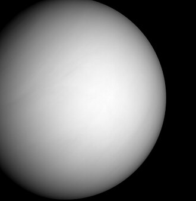

Nesta página há informaçoẽs principais de alguns planetas presentes em nosso sistema
Este site contém números e dados oficiais da NASA:
Mercúrio

Mercúrio é o menor e o mais rápido planeta do Sistema Solar, localizado a uma distância média de 58 milhões de quilômetros do Sol. Ele não possui luas, tem uma superfície repleta de crateras semelhante à da Lua, e experimenta variações térmicas extremas devido à sua atmosfera rarefeita (exosfera).
Características Principais
--Tamanho e Diâmetro: Possui cerca de 4.879 km de diâmetro equatorial.
--Órbitas e Dias: Um ano dura 88 dias terrestres e um dia completo (rotação) leva 59 dias terrestres.
--Temperatura: Varia de impressionantes 430 °C durante o dia até -180 °C à noite.
--Composição: Formado por cerca de 70% de metal e 30% de silicatos, apresentando um imenso núcleo de ferro que ocupa grande parte do planeta
Vênus

É o segundo planeta a partir do Sol e o mais quente do Sistema Solar, com temperaturas próximas de 475 ºC. Conhecido como o "gêmeo da Terra" devido ao tamanho similar (cerca de 12.104 km de diâmetro), ele possui uma atmosfera densa e tóxica de dióxido de carbono que gera um forte efeito estufa.
Características Principais
-Distância do Sol: Cerca de 108 milhões de km
-Duração do Ano(translação): 225 dias terrestres
-Duração do dia (rotação): 243 dias terrestres (gira no sentido horário/retrógrado)
-Luas: Nenhuma
-Temperatura média: 475 ºC
Terra

O planeta Terra é o terceiro planeta a partir do Sol e o quinto maior de todo o Sistema Solar. Sendo o único corpo celeste conhecido que abriga a vida, a Terra possui uma combinação perfeita de elementos que a tornam um lugar único
Características Principais
-Posição: É o terceiro planeta a partir do sol
-Classificação: É um planeta rochoso (ou telúrico), o que significa que possui uma superfície sólida feita de rochas e metais, ao contrário dos gigantes gasosos como Júpiter.
-Tamanho: É o quinto maior planeta do Sistema Solar em diâmetro e massa.